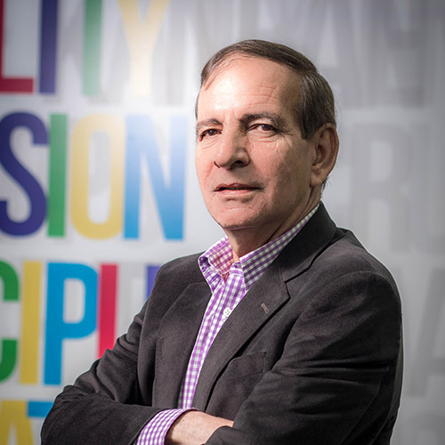
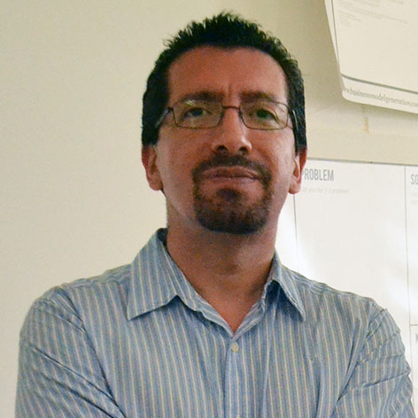
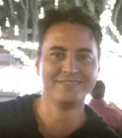
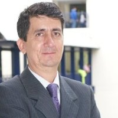
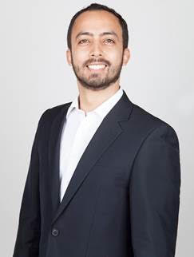
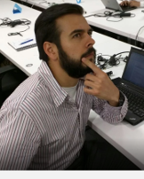
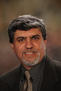

Jorge Aramburo Siegert
Fundador y actual presidente de PSL, tiene 30 años de experiencia en el negocio del software como practicante, gerente, consultor y educador. El señor Aramburo fue el gestor y líder del proceso de mejoramiento que llevó a la empresa colombiana a alcanzar los más altos estándares y reconocimientos en ingeniería de software en el mundo. Bajo su dirección, PSL se convirtió en un líder mundial en la adopción de mejores prácticas y técnicas de ingeniería. La compañía que dirige es reconocida mundialmente por su calidad, y es una importante exportadora de servicios de desarrollo a los más exigentes mercados mundiales. El señor Aramburo es expositor internacional y autor de numerosos artículos alrededor del tema. Es ingeniero electrónico, tecnólogo en sistemas, cursó además una Maestría en Administración de negocios, así como una especialización en finanzas.

Jesús Arturo Pérez Díaz
El Dr. Jesús Arturo Pérez Díaz estudió la carrera de Ing. En Sistemas Computacionales graduándose con mención. En el año 2000 obtuvo el grado de PhD. Doctor en Informática con especialidad en seguridad en redes, obteniendo su grado con sobresaliente cum laude. El Dr. Jesús Arturo Pérez Díaz cuenta con las reconocidas certificaciones de CCNA, CCNA Wireless, CCNA Security, CCNP y CCAI de Cisco Systems. En 2006 fue reconocido por el grupo de universidades europeas COIMBRA como uno de los mejores investigadores jóvenes de Latinoamérica, gracias a esta condecoración fue seleccionado para trabajar en la Universidad de Lovain-le- Neuve, en Bélgica. En mayo de 2007, fue reconocido por el CIGRÉ (Consejo Internacional de Grandes Sistemas Eléctricos) como el creador del mejor sistema de comunicación y telecomunicaciones para sistemas eléctricos de Ibero América. En Octubre de 2007, fue ganador el tercer lugar del premio Intel de Innovación empresarial, con el proyecto “TrusteME: sistema de banca móvil y pagos electrónicos seguros”. Actualmente el Dr. Pérez forma parte del Sistema Nacional de Investigadores como SNI 1, y en los últimos años ha trabajado en el Centro de Innovación y Transferencia de Tecnología (CEDITTEC) donde ha varios desarrollos tecnológicos de donde ha ha obtenido una patente titulada: Sistema de rehabilitación motivacional mecanomotriz para brazos y piernas, con monitoreo de signos vitales, para pacientes con paraplejia, hemiplejia y/o apoplejía. De igual forma cuenta con una certificación en Patentes y Marcas. Actualmente el Dr. Pérez se desempeña como profesor investigador del campus Cuernavaca y director del CEDITTEC en la línea de proyectos de computación.

Pablo Henriquez
Ingeniero Civil en Informática, Universidad Técnica Federico Santa María. SCAMPI Lead Appraiser para CMMI autorizado por el CMMI Institute para SCAMPIs clase A, B y C. Ha realizado más de 75 evaluaciones en 13 países. Instructor oficial de CMM reconocido por el Software Engineering Institut e, Carnegie Mellon University, desde 1999 hasta 2004, capacitó a más 350 personas de 7 países. Ha sido precursor y pionero de la transferencia de conocimientos e implementación en métodos de mejora continua y optimización de procesos en latinoamérica relacionados con Gestión Cuantitativa de los procesos, SW-CMM, CMMI-DEV- SVC-ACQ, TSP / PSP, Arquitectura empresarial utilizando enfoque multi-modelo. Ha sido autor de programas de fortalecimiento de la industria del software acogidos en varios países de Latinoamérica. Ha liderado esfuerzos de consultoría desde 2000 a la fecha logrando altos niveles de rendimiento en importantes empresas de Latinoamérica y Asia. Lideró a Citibank GCB Technology Chile a CMM Nivel 3, (octubre 1999) y a Citibank GCB Technology Chile & Perú a CMM Nivel 3 (abril 1998). Miembro de Grupo regional LATAM en Citibank para la mejora y optimización de procesos. Ha sido invitado como conferencista en eventos tales como: SEPG SEI Conference, EEUU; TSP Symposium, Georgia Tech, Atlanta; JCSE Witts University, Johannesburg, Sudáfrica; Techday, San Salvador, El Salvador; Ministerio de Educación de República Dominicana; Capability Counts Conference, CMMI Institute, EEUU; Universidades y agrupaciones gremiales en Chile, Colombia, Costa Rica y República Dominicana.

Gonzalo Andrés Moreno
Ingeniero Industrial de la Universidad de los Andes Con especialización en Deep Learning y Data Science. Experiencia de 9 años aplicando machine learning a problemas logísticos y del sector de Retail.
Jorge Johnson
Ingeniero de sistemas con 30 años de experiencia en desarrollo de software. Ha trabajado como arquitecto de software en .Net y iOS, y como scrum master y coach, ayudando a las personas a mejorar la forma en la que están haciendo las cosas. Durante su tiempo libre disfruta estudiando astronomía, astrofísica, matemáticas, biología, ciencias de la tierra, historia, fotografía digital y lenguajes de programación.

Miguel Buitrago
Es Gerente General de SEQUAL S.A., empresa cuyo negocio es la calidad del Software. Miguel es, además, el Presidente actual del CT 31, Ingeniería de Software y Sistemas, de ICONTEC y el secretario de upto25, http://www.upto25.net/, una organización internacional con sede en España, que le ayuda a pequeñas empresas a mejorar su proceso software. Miguel Buitrago es Ingeniero de sistemas con un posgrado en Gerencia y Calidad de Software; cuenta con 15 años de experiencia en modelos Internacionales de calidad de Software y más de 20 años en gerencia y coordinación de proyectos de software. Ha sido docente Universitario, conferencista y consultor en calidad de software.
Javier Sierra
es ingeniero electrónico de la Universidad Nacional de Colombia, sede Manizales. Especialista, Magíster y doctor en Ingeniería área de Telecomunicaciones de la Universidad Pontificia Bolivariana, en Medellín, Colombia. Categorizado como Investigador Asociado en Colciencias. Ha sido director de la Facultad de Ingeniería en Tecnologías de la Información y la Comunicación (TIC), coordinador del doctorado en Ingeniería área de Telecomunicaciones de la Universidad Pontificia Bolivariana; Vicerrector de Calidad de la Corporación Universitaria del Caribe CECAR en Sincelejo. Actualmente, se desempeña como docente-investigador en la Facultad de Ingeniería de la Universidad de Sucre, en el área de las tecnologías de la información. El ingeniero ha participado en diferentes congresos nacionales e internacionales (IEEE, ACM), donde ha recibido premios como mejor artículo presentado. También es autor de diferentes publicaciones en revistas indexadas, así como editor de los libros "Quality of Service and Resource Allocation in WiMAX" y "Advanced Transmission Techniques in WiMAX". Su biografía es publicada en el libro: who’s who in the world, 2011 edition; who’s who in Science and engineering by Marquis Who’s who in the world. Entre sus temas de interés se encuentran las redes ópticas, inalámbricas, simulación, optimización de sistemas de telecomunicaciones y aplicación de las TIC.

Federico Moreno Vásquez
Ingeniero de Telecomunicaciones de la Universidad de Medellín, con Maestría en Ciencias de Gestión Tecnológica (Ms. Management of Technology) de la universidad de Minnesota (U.S.A.). Tesis de grado de maestría en "Análisis de Oportunidades de Crecimiento para las Pymes Colombianas en el sector de las TICs". Mi experiencia laboral incluye trabajo como ingeniero de Análisis Causa Raiz en UNE EPM Telecomunicaciones, manager de pruebas de interoperabilidad en Alcatel-Lucent Francia, product manager y sales manager de dispositivos terminales de usuario en Huawei Colombia. He trabajado como consultor independiente, y actualmente trabajo como Estratega Tecnológico de cuenta para Microsoft Colombia. Mis áreas de interés incluyen Análisis de tecnología, estrategia tecnológica, administración de negocios de tecnología, emprendimiento de empresas y consultoría de negocios de la industria TICs.

Yon Ramírez
Ingeniero de Sistemas, especialista en Gerencia de Proyectos, con más de 13 años de experiencia participando en proyectos de inteligencia de negocios en diversos roles y con diversas tecnologías. Actualmente BI SWD en Globant y participando en proyectos en el campo de Analytics, con equipos de trabajo distribuídos y para grandes clientes en el extranjero.

Jorge Valenzuela
Es Philpott-WestPoint Stevens Professor en el Departamento de Ingeniería Industrial y Sistemas en la Universidad de Auburn, Alabama, USA. Posee grados en ingeniería electrónica e industrial, Masters en estadística e ingeniería industrial, y un PhD en ingeniería industrial y sistemas. El Dr. Valenzuela ha recibido múltiples premios por su dedicación a la docencia e investigación. Recibió el William Walker Teaching Award, el Junior Faculty Research Award, y dos veces el Outstanding Faculty Teaching Award. Sus intereses de investigación se encuentran en el campo de la modelación y análisis de sistemas de generación de energía. Su investigación ha sido financiada por el Argonne National Lab, National Science Foundation, y el servicio forestal del USDA. El Dr. Valenzuela tiene más de 60 publicaciones científicas. Es editor asociado del journal Energy Systems Optimization, Modeling, and Simulation. El Dr. Valenzuela ha presidido la sección de Energy, Natural Resources, and the Environment y el Combined Colloquia de la conferencia internacional INFORMS. También presidió el comité de Publicidad de INFORMS y de la Winter Simulation Conference.
Neil Guerrero González
Profesor de la Universidad Nacional de Colombia, sede Manizales. Es Ingeniero electrónico y Magister en automatización industrial de la Universidad Nacional de Colombia. Doctor en Ingeniería Fotónica de la Universidad Técnica de Dinamarca, en la cual también realizó estudios posdoctorales en el marco del proyecto europeo CHRON (Redes ópticas cogniticas heterogéneas y reconfigurables por su sigla en inglés). En su trayectoria profesional, el profesor Guerrero ha estado vinculado con el centro de investigación europeo de Huawei Technologies vinculado con el desarrollo de canales de transmisión de datos de muy alta velocidad y posteriormente también con el centro brasilero de investigación y desarrollo en telecomunicaciones donde fue líder del grupo de trabajo en redes ópticas de alta velocidad. Los interés de investigación del profesor Guerrero incluyen las comunicaciones ópticas coherentes, el procesamiento digital de señales y los sistemas de comunicaciones híbrido fibra-inalámbrico.
Lucas Fernando Müller
Profesor de la Universidad de Santa Cruz del Sur en la ciudad de Santa Cruz, Estado de Rio Grande del sur, Brasil. Es Bachelor en Ciencias de la computación por la Universidad de Santa Cruz del Sur y Magister en Ciencias de la Computación de la Universidad Federal de Rio Grande del Sur, Brasil. Actualmente es estudiante de doctorado en ciencias de la computación adscrito al grupo de redes de computadores del instituto de informática de la Universidad Federal de Rio Grande del sur. El profesor Müller ha participado en proyectos de investigación en diversas áreas de las redes de computadores como son planeación y optimización de infraestructura en el contexto de nuevo paradigma de Redes Definidas en Software, y en el monitoreo del universo Torrent en particular para controlar, rastrear y filtrar el intercambio de contenido ilegal como pornografía infantil o contenido protegido por derechos de autor tal como música, juegos o películas entre otros.